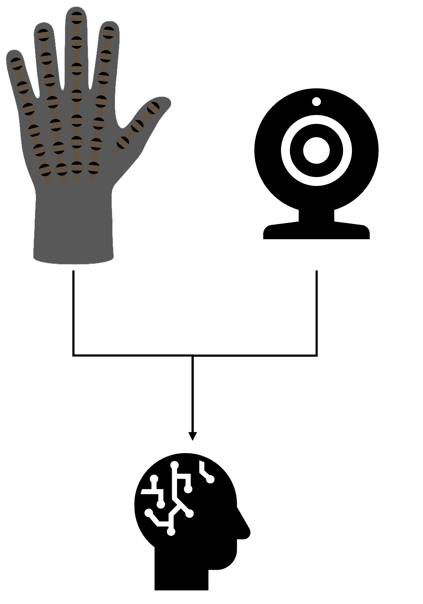

A · MULTIMODALITY
Cross-modal perception
Learning relationships between complementary modalities such as vision, touch, motion, and sound for robust perception.
My research interests lie in systems that integrate sensing materials, electronics, embedded software, and machine learning.
My recent work investigates multimodal learning for object classification from visual and tactile information collected during grasping. The research includes developing a tactile glove and its acquisition architecture and evaluating uni- and multimodal learning methods.

I am currently exploring these themes to connect my current experience with possible future doctoral research in robotics and intelligent physical systems.
Learning relationships between complementary modalities such as vision, touch, motion, and sound for robust perception.
Integrating sensing into systems that physically interact with uncertain environments and adapt through contact.
Scalable embedded architectures, synchronized data acquisition, and reliable hardware–software interfaces.
Combining emerging sensing materials with practical electronics, packaging, calibration, and system validation.
I enjoy research that moves repeatedly between physical prototyping and data analysis.
Sensor fabrication, circuits, embedded communication, mechanical integration, and acquisition software.
Calibration, controlled experiments, synchronized data collection, and reliability checks.
Signal processing, visualization, statistical evaluation, and machine-learning-based classification.